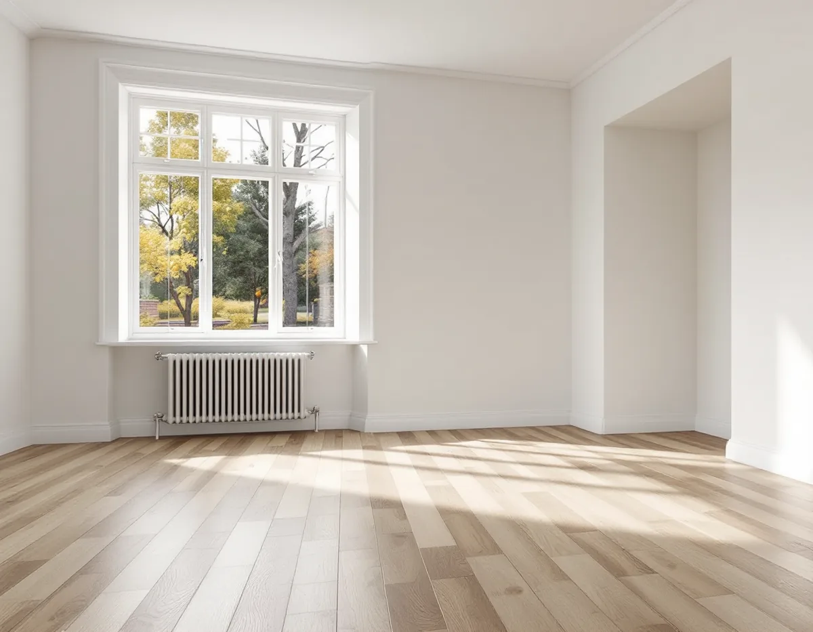
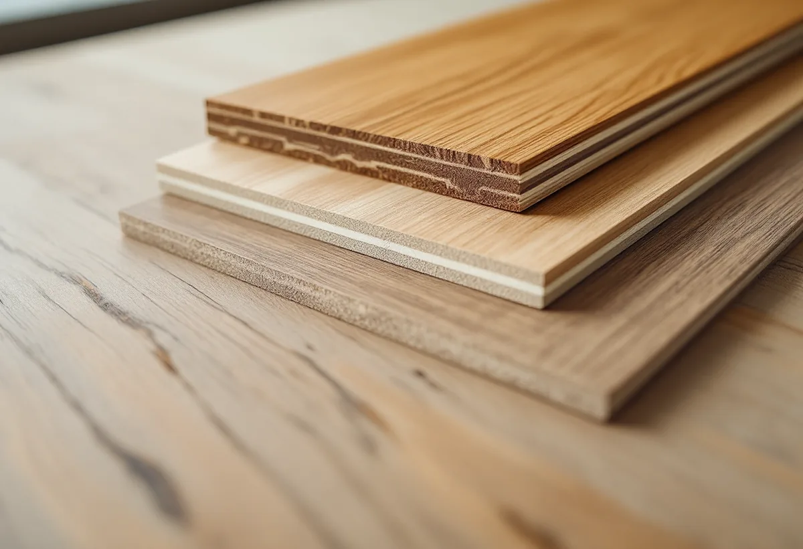

Platsbesök
Vi tar reda på vilket golv som ligger i varje rum och om det går att slipa.
Fyra golv kan se nästan likadana ut i ett rum men kräva helt olika åtgärder när de blir slitna. Ett av dem går utmärkt att slipa, ett annat inte alls. Geal Entreprenad AB lägger nya golv och renoverar gamla i Solhem, Bromsten, Flysta och Sundby, med gratis platsbesök, skriftligt kostnadsförslag och ROT-avdraget direkt på fakturan.

Stockholms stads områdesfakta för 2025 räknar 2 038 bostäder i småhus i Solhem, och 1 946 av dem är äganderätter. Bromsten har 1 066, Flysta 663 och Sundby 559. I Flysta ligger fyra av fem bostäder i småhus. Sammantaget är det över 4 300 villor och radhus i de fyra stadsdelarna.
I hus som har renoverats i omgångar är det vanligt att rummen har olika golv: ett ursprungligt trägolv i ett rum, en parkett från en senare renovering i ett annat och kanske ett klickgolv i en tillbyggnad. Innan vi föreslår slipning eller ett nytt golv tar vi reda på vilken sorts golv som ligger i varje rum.

Golvbranschen skiljer på fyra vanliga typer. Ett massivt trägolv består av samma träslag rakt igenom, till exempel brädor, kortstavsparkett eller mosaikparkett, och går därför utmärkt att slipa. Lamellparkett, eller flerskiktsparkett, är oftast byggd i tre skikt med fiberriktningen vinkelrätt mot varandra, vilket minskar golvets rörelser. Slitskiktet överst är minst 2,5 millimeter, och golvet går att slipa.
Ett fanérgolv har också ett ytskikt av trä, men det är tunnare än 2,5 millimeter och i regel ungefär en millimeter. Eftersom ungefär en millimeter försvinner vid en slipning går det normalt inte att slipa om. Ett laminatgolv har en kärna av träfiberskiva och ett ytskikt med tryckt dekor, ofta av plast. Det kan varken slipas, oljas eller lackas om, och enligt Golvbranschen ska det inte heller behandlas med polish eller vax.
Ett slitet fanér- eller laminatgolv byts i stället för att slipas. Är ytan lackad kan den enligt Golvbranschen fräschas upp med en så kallad refresher enligt tillverkarens anvisning, och ett lackat laminatgolv sköts som ett lackat trägolv. Är golvet ett naturoljat fanérgolv går det lättare att punktbättra än andra ytbehandlingar.
Fanérgolvets låga bygghöjd, oftast 7–8,5 millimeter, gör det enligt Golvbranschen lämpligt som renoveringsgolv. Laminat finns från 6 till 12 millimeter, och vissa har ett stegljudsdämpande skikt redan från fabriken. Båda typerna är träbaserade och sväller och krymper med luftfuktigheten. De mår bäst vid 30–60 procent luftfuktighet och är avsedda för torra utrymmen. Vill du hellre ha ett golv som kan slipas i framtiden är massivt trä eller lamellparkett rätt val.
Golvbranschen skiljer på två slags ljud. Enstaka knäppningar som hörs när man går över golvet men inte när man strax går tillbaka samma väg kallas spänningsljud och räknas som en naturlig del av ett trägolv. Knarr som hörs varje gång golvet belastas, över en större yta eller i gångstråken, räknas däremot som ett fel.
Orsakerna kan enligt branschen vara ett ojämnt undergolv, ett för mjukt mellanlägg av foam eller liknande, eller att golvet sitter i spänn för att rörelsefogen mot väggar eller fast inredning är för liten. Hög luftfuktighet kan få brädorna att svälla och gnida mot varandra, och ibland är det fel i själva golvet, till exempel en felfräst profil. Därför kontrollerar vi planheten och lämnar en rörelsefog runt hela golvet, även mot köksskåp och trappor. Ska köket byggas om, se köksrenovering i Spånga.
I vardagsrum och sovrum där golvet ska hålla länge brukar vi föreslå ett golv som går att slipa. I en tillbyggnad där bygghöjden är knapp kan ett tunnare golv vara lösningen. Ska väggar och lister målas om samtidigt finns mer under målare i Spånga, och om golvtyper och ytbehandlingar på sidan om golvläggning.
Vi tar reda på vilket golv som ligger i varje rum och om det går att slipa.
Vi går igenom bygghöjd, rum och slitage och föreslår golvtyp.
Rivning, underlag och nytt golv redovisas som egna poster.
Det gamla golvet tas bort eller underlaget riktas så att det blir plant.
Mellanlägg och golv läggs med rörelsefog mot väggar och fast inredning.
Lister och trösklar sätts tillbaka och du får skötselråd för golvtypen.
Skatteverket räknar det som rotarbete att slipa och byta golv i ett småhus du äger och bor i. Avdraget är 30 procent av arbetskostnaden, högst 50 000 kr per person och år, och högst 75 000 kr tillsammans med rutavdrag.
Själva golvet och resorna ger inget avdrag. Geal drar avdraget direkt på fakturan.
Golvytan, vilken golvtyp du väljer och hur mycket undergolvet behöver riktas avgör mest. Ett golv som kan slipas i stället för att bytas blir ofta en mindre insats. Du får ett skriftligt kostnadsförslag efter ett gratis platsbesök.
Parkett, trägolv, klinker och slipning.
Golvläggning i Stockholm →Takbyte, takbesiktning och plåtarbeten.
Takläggare i Spånga →Solhem, Bromsten, Flysta och Sundby.
Takrenovering i Spånga →Solhem, spåren och de stora tomterna.
Attefallshus i Spånga →Äldre villor, duschplats och bostadsanpassning.
Badrumsrenovering i Spånga →Riva och bygga nytt hus.
Byggföretag i Spånga →Bättra eller måla om hela villan.
Fasadmålning i Spånga →Trävillor och gruppbyggda radhus.
Fasadrenovering i Spånga →Villor, verandor och nya öppningar.
Fönsterbyte i Spånga →Villorna i Solhem.
Fönsterrenovering i Spånga →Breda originalgolv och patina.
Golvslipning i Spånga →Solhem, villastäder och kök i flera lager.
Köksrenovering i Spånga →Solhems färgskala och villorna kring stationen.
Målare i Spånga →Villatak, rännor och stuprör.
Plåtslagare i Spånga →Väggar, vindar och verandor i villastäderna.
Snickare i Spånga →Solceller, radarn och Solhem.
Takbyte i Spånga →Tapet som passar husets tid.
Tapetsering i Spånga →Villastäderna, tomterna och gatan.
Tillbyggnad i Spånga →Villastäderna, stommen och ventilationen.
Totalrenovering i Spånga →